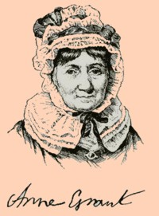

by
Stefan Bielinski
 With Peter Kalm, Anne Grant is the most often-cited observer of early Albany life. In 1808, she published a memoir of her stay in the Albany area during the 1760s when she was a child.
Anne Mc Vickar was born in Glasgow, Scotland in 1755. She was the only child of Duncan Mac Vickar, a Scottish army officer, and his wife, a daughter of the Stewart family of Argyle. In 1758, she came to America with her mother to join her father who was on duty at Claverack. There, she was taught to read by her mother and also learned to speak Dutch. In 1760, they accompanied Mac Vickar to Oswego.
In 1762, the precocious Anne attracted the attention of Madame Schuyler of Albany who sent for her and with whom she lived for several years. In the meantime, her father turned his pension into lands in what became Vermont on which he sought to establish a plantation. However, by 1768, ill health and disillusionment with the realities of settlement on hardscrabble uplands persuaded him to take his family back to Scotland. In 1768, Anne left America - never to return!
In 1779, twenty-four-year-old Anne Mc Vickar married James Grant, an army chaplain and scholar. They settled at Laggan in the Scottish highlands. Anne became a student of Celtic culture while rearing her twelve children. Reverend Grant died in 1801 leaving Anne a widow with eight children to support. She began to write and issue poems and also a number of travel-based works. The best known of her achievements is Memoirs of an American Lady, which she began at the age of fifty-two.
Anne Mc Vickar Grant died in Edinburgh, Scotland in November 1838 at the age of eighty-four.
Widely utilized by historical interpreters, her memoir represents a daunting resource for our community-based study as we attempt to reconcile the Albany-relevant parts of her portrait with the actual historical record.
notes
Detail of an engraving of a miniature portrait of Anne Grant said to have been produced by one R Macleay done in 1825. But see: John Watson Gordon. Copied here from a reproduction on the Frontispiece of Memoirs of an American Lady, volume one of the 1901 edition. Sources: The life of Anne Mc Vickar Grant has not been assigned a CAP biography number. This profile is derived chiefly from her published Memoirs and from community-based resources.
Sources: The life of Anne Mc Vickar Grant has not been assigned a CAP biography number. This profile is derived chiefly from her published Memoirs and from community-based resources.
Online: Begin with Wikipedia; next see iment.com and her fascinating explanatory exposition; In addition, see this online biography; another online profile; finally (for now) Paradises Lost.
first posted: 12/15/03; last updated 4/1/15